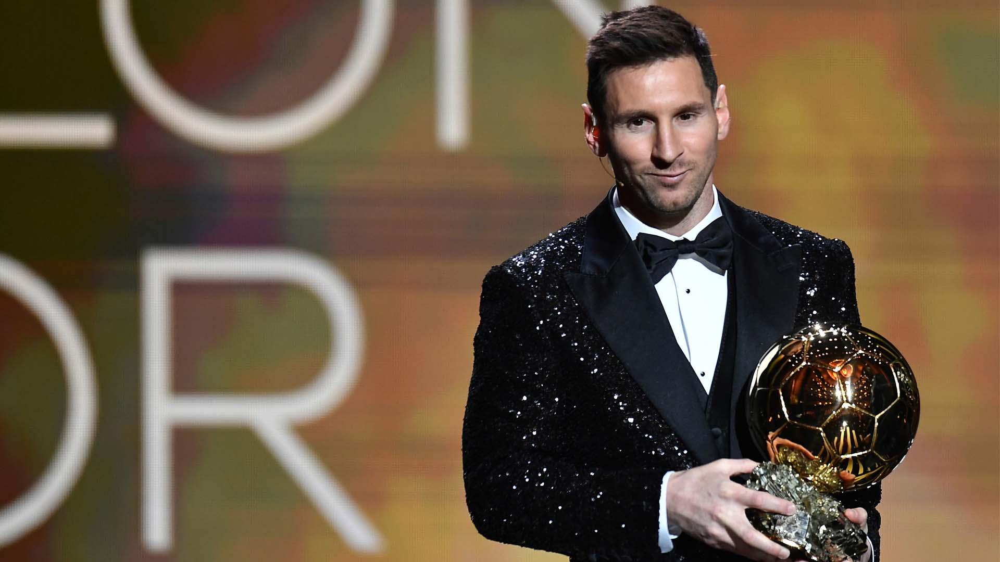

Sobre el evento
La Gala del Balón de Oro es una ceremonia anual que reconoce al mejor futbolista del mundo, organizada por la revista France Football. Es uno de los galardones más prestigiosos del deporte rey y reúne a las estrellas más importantes del fútbol internacional.
La edición 2025 promete ser histórica, con nominaciones de grandes figuras que han dejado su huella en la temporada. La gala incluye actuaciones en vivo, entrevistas exclusivas y la esperada revelación del ganador del Balón de Oro masculino y femenino. El favorito a ganar el trofeo actualmente es Lamine Yamal.
Galería de ediciones pasadas
